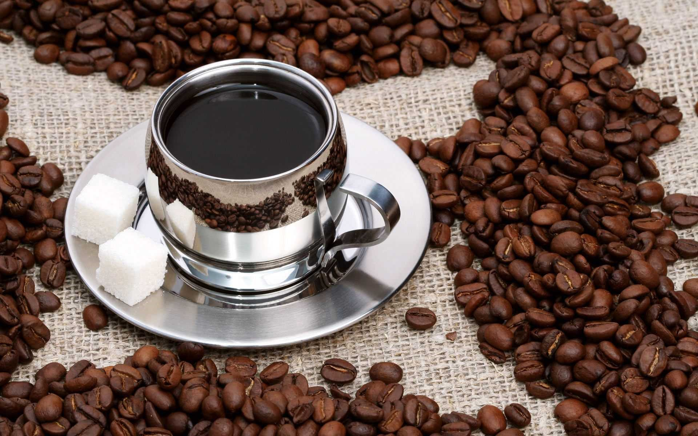

1、咖啡因
有特别强烈的苦味，刺激中枢神经系统、心脏和呼吸系统
适量的咖啡因亦可减轻肌肉疲劳，促进消化液分泌。
由于它会促进肾脏机能，有利尿作⽤，帮助体内将多余的钠离⼦排出体外。
但摄取过多会导致咖啡因中毒。
2、丹宁酸
煮沸后的丹宁酸会分解成焦梧酸，所以冲泡过久冷却后的咖啡味道会变差。
3、脂肪
其中最主要的是酸性脂肪及挥发性脂肪。
4、酸性脂肪
即脂肪中含有酸，其强弱会因咖啡种类不同而异。
5、挥发性脂肪
是咖啡香气主要来源，它是⼀种会散发出约四十种芬香的物质。
6、蛋⽩质
卡路里的主要来源，所占比例并不高。咖啡末的蛋白质在煮咖啡时，多半不会溶出来，所以摄取到的有限。
7、糖
咖啡生豆所含的糖分约8%，经过烘焙后⼤部分糖分会转化成焦糖，使咖啡形成褐色，并与丹宁酸互相结合产生甜味。
8、纤维
生豆的纤维烘焙后会炭化，与焦糖互相结合便形成咖啡的色调。
9、矿物质
含有少量石灰、铁质、磷、碳酸钠等。
二、饮用咖啡的利弊

好处
1、消除疲劳
因为咖啡中含有咖啡因，对于上班族来说，在繁忙的工作之际，喝一杯咖啡能够提神醒脑，消除疲劳；具有保护大脑、增强情绪的作用。同时，咖啡还有利尿、解酒的好处；此外，研究显示，咖啡可能有助于防辐射的作用。
2、缓解便秘
因为咖啡可以刺激中枢神经系统，使人体新陈代谢加快，帮助脂肪分解、缓解便秘症状，且还有一定的减肥效果。对于偶尔排便不顺畅的患者来说，喝杯咖啡有助于通便。但需注意，不要加奶精和糖。
3、保护血管
因为咖啡中含有多酚类物质，同时也被称为黄酮类化合物，具有超强的抗氧化能力，还可保护心血管功能。此外，咖啡还有预防胆结石的好处；研究人员发现，每天喝2~3杯咖啡，患胆结石的几率比不喝咖啡的人要低40%左右。
坏处
1、导致过敏
虽然适量喝咖啡，对我们的大脑是有好处的。但如果过量的话，则会使大脑产生兴奋，影响神经系统。并且咖啡喝得越多情绪就越容易激动。因此，要避免过量，以免引发过敏反应。此外，孕妇如果过量喝咖啡的话，会导致胎儿畸形甚至引发流产。
2、导致失眠
因为咖啡中含有咖啡因，且咖啡因具有兴奋的作用。如果摄入过多的话，就会对神经系统造成很大的影响。尤其是晚上会让人有烦躁不安的情绪，进而影响睡眠质量。同时，还可能会引发心血管疾病及高血压、冠心病、动脉硬化等疾病。
3、骨质疏松
因为咖啡本身是具有很好的利尿效果的，但如果长期且大量饮用咖啡的话，则很容易造成骨质流失，对骨量的保存是很不利的。尤其是绝经期的女性，对钙质的流失会更加明显。因此，应避免长期过量喝咖啡。